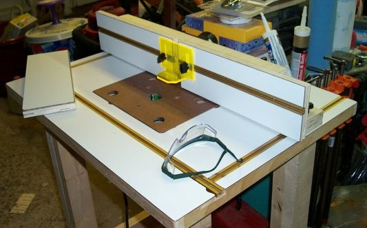
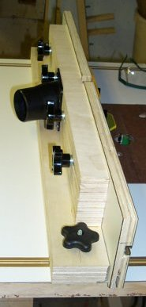
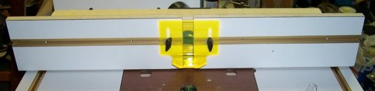
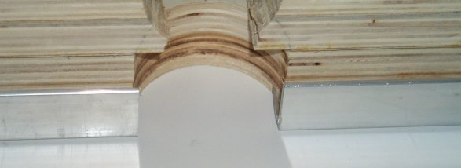
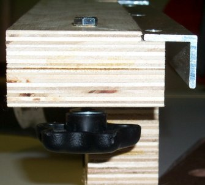
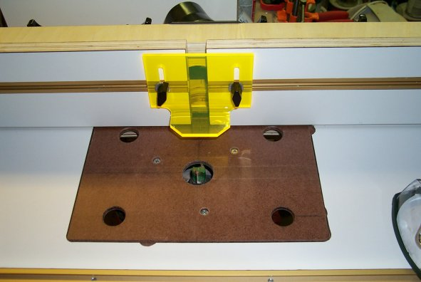

ThunderEagle's Nest


This is the Router Table Fence featured in ShopNotes #69. The plans called for Baltic Birch, however, I used normal birch plywood for mine. The most difficult aspects of my version of this fence was making some of the relief cuts needed for the piece of Aluminum Angle. Other than that, you really just need to make sure you have everything flush when you glue up the back portion.
I made a couple of modifications. The first was to add a 5th board to the smaller portion of the back to accommodate the dust port attachment. The plans had directions to make a dust port, however it involved some miter cuts, one of which they showed on a ban saw, which I do not own one of. It also really requires a drill press to properly make the hole, and I didn't think using a hand held drill with a hole saw was going to get the job done. I also added the knobs and the 1/4" Hex bolts to the side instead of using C-Clamps to hold it in place. While I squared the lines for my T-Track to the front T-Track, there is still about a 1/16" variation from the back of the table to the top of the T-Track, so I used a 5/16" drill bit to make the holes for my 1/4" bolts to give them enough movement to slide the fence easily from front to back. The plans also called for a 3" hole for the bit relief, however the biggest hole saw I could purchase for the arbor I already had (Craftsman kit) was 2 1/2". I have no raised panel bits, so I do not think this will be an issue. If I were to remake this fence, I would make the bottom two layers of birch plywood wider than they currently are as the fence is a little top heavy since I added the extra layer and made my split fences taller accordingly. This brought my height up to 5" from the 4 1/2" called for in the plans.
 The Bit Guard I purchased from Eagle-America, I would like to add the Freehand Guard one day as well. The T-Track is just held in with friction as being only 3/4" Plywood and the groove being 3/8" deep, there isn't much room for a screw. If it ever becomes and issue I may use Contact Cement or some other form of Liquid Nails to affix them permanently, but I would rather have the option of pulling them out. As you look at the top picture, the fence laying on the table is my jointer face. It is made just like the other two, but there is no T-Track and there is a second layer of laminate added to the front. The top and sides of the fences have a 45 degree 1/16" chamfer and the bottoms are trimmed flush. I still need to make 45 degree cuts to the inside edges of the fences to allow for bit clearance, but I have just been putting off setting up my Table Saw to do that (no mitre saw yet).
Here are some views of the aluminum angle that the sliding faces run on. The cut for the angle could have been a little better, however the way it is gives me some clearance if my screws are not completely flush.

Another picture of the fence ready for action.
